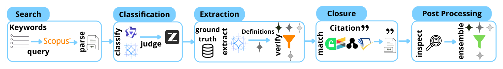
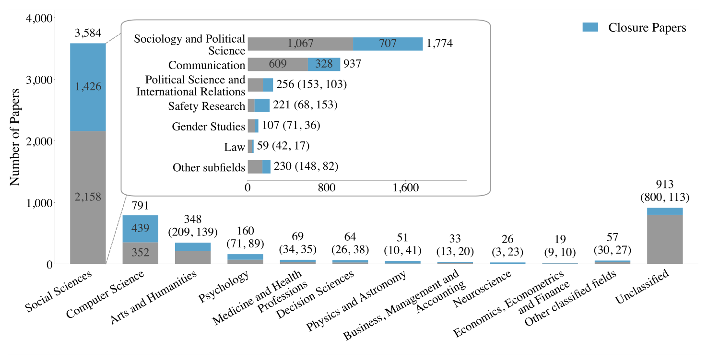
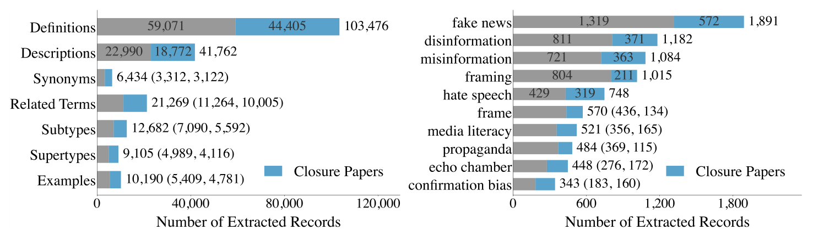
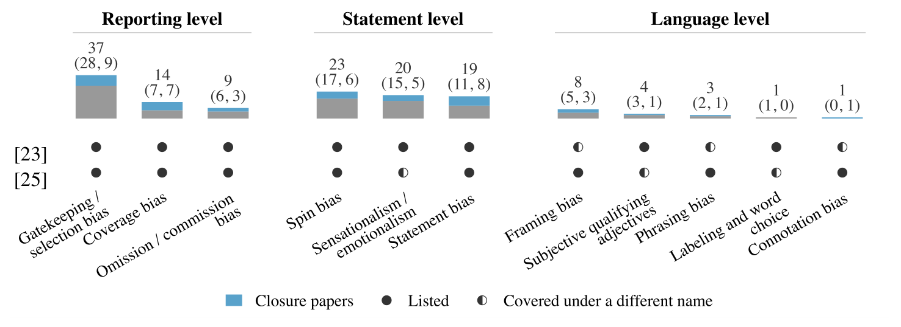
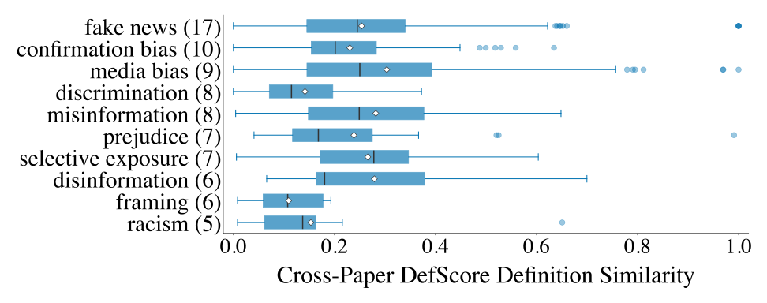
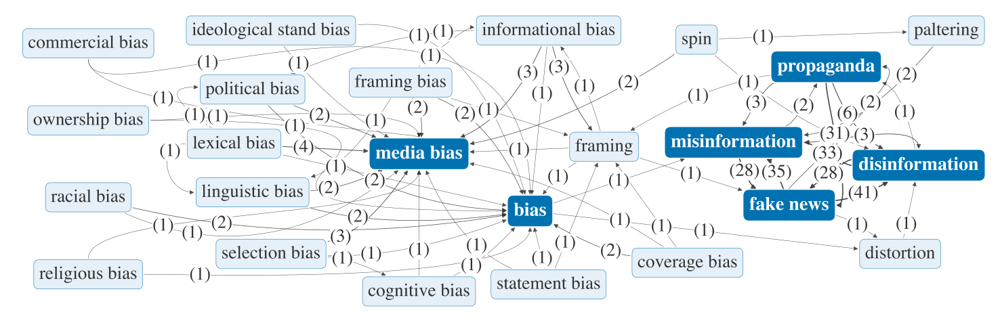
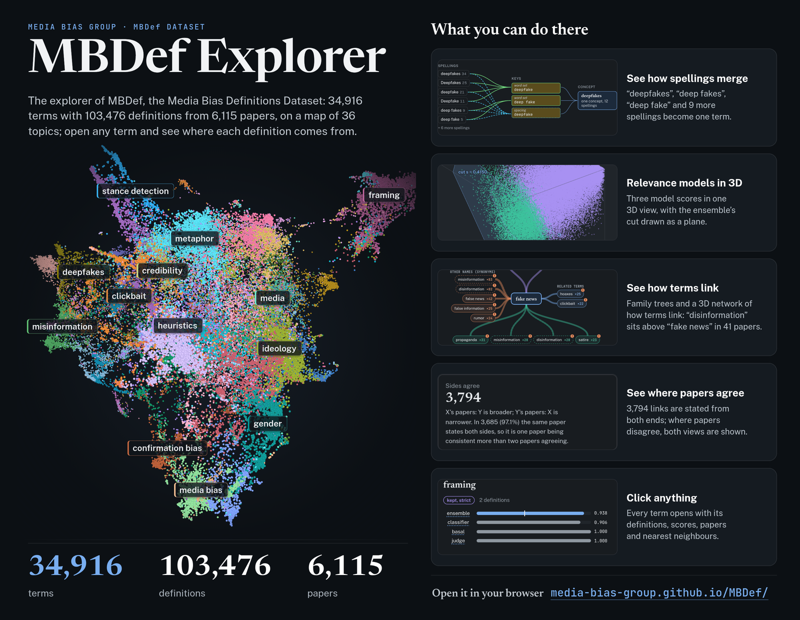

34,916 terms · 36 topics Each dot is one term from MBDef, placed by the meaning of its definitions: terms with similar definitions sit close together. Colours are 36 topics, one reasonable grouping found by clustering; the labels name ten of them by their most common term. Drag to turn; click to open the Explorer.
Open the MBDef ExplorerMBDef: A Media Bias Definitions Dataset
Highlights
How MBDef was built
Five steps turn a keyword search into a dataset of definitions. Each step keeps what the next one needs and says what it leaves out.

-
1
Search
A Scopus keyword search returns 50,101 documents, 35,815 of them openly accessible; 14,862 of their PDFs could be retrieved and converted to text.
14,862 papers read -
2
Classification
Two language models judge each paper's title and abstract; a third settles their disagreements. Relevant papers become the seed corpus.
3,869 seed papers -
3
Extraction
An extractor writes down each term a paper defines, with its definitions and related fields. It is trained and scored on the hand-validated MBDef-Gold.
80.5% of test definitions found -
4
Closure
Works cited next to the extracted definitions are fetched, one level deep, and extracted the same way: papers the keyword search missed.
+2,610 cited papers -
5
Post-processing
Spellings of one term are merged, and three models together remove definitions of terms unrelated to media bias.
103,476 definitions kept
Figures
The paper's figures as printed. In each, grey counts the seed papers that the keyword search found, and blue the papers added through their citations; numbers in brackets are those two parts.

Fig. 2. The research disciplines of the 6,115 papers, from OpenAlex, one field per paper. Most come from the social sciences (58.6%), where media bias is mainly studied; grey are seed papers, blue are papers added through their citations.

Fig. 3. Left: how many items of each kind were extracted from the papers, definitions first (103,476). Right: the ten terms with the most definitions, led by fake news (1,891).

Fig. 4. All eleven bias types that two published classification schemes share are defined in MBDef. Reporting-level types such as gatekeeping (37 papers) are well covered; language-level types are rarely defined under these names.

Fig. 5. How similar two papers' definitions of the same term are (DefScore, 0 to 1), in MBDef-Gold. Most pairs score low: the median for media bias is 0.25.

Fig. 6. Narrower-to-broader links that papers report between terms around media bias, fake news and propaganda; numbers count the papers behind each link.
Abstract
The MBDef Explorer
The Explorer is a web page for browsing all of MBDef: search a term and read how each paper defines it, see which spellings were merged into one term, follow the broader and narrower terms that papers name, and explore the full map of the terms, flat or in 3D, with any topic named.

BibTeX
The paper, then the two datasets on Zenodo. The paper's entry will gain its venue once it is published.